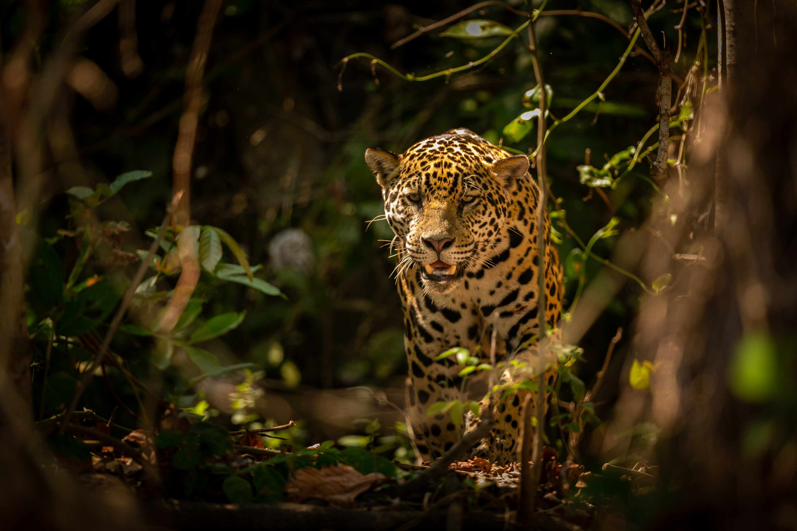

Compartilhe
Divulgue informações sobre espécies ameaçadas.
Conhecimento é o primeiro passo. A preservação começa com a ação.
A preservação da fauna e dos biomas brasileiros também começa nas escolhas do dia a dia.
Compartilhar conhecimento, apoiar iniciativas de conservação, consumir de forma consciente e conhecer a biodiversidade são atitudes que ajudam a fortalecer uma cultura de proteção da natureza.
Não é preciso fazer tudo de uma vez. Cada atitude contribui para construir uma relação mais responsável com o ambiente em que vivemos.
Divulgue informações sobre espécies ameaçadas.
Conheça organizações que trabalham com conservação.
Reduza impactos sobre os ecossistemas.
Conheça a biodiversidade brasileira.

Conheça organizações que trabalham diretamente com conservação da fauna, das florestas e dos oceanos.
Conheça iniciativas que atuam na conservação da biodiversidade brasileira.
Atua na conservação e restauração da Mata Atlântica, com monitoramento, mobilização e iniciativas de proteção do bioma.
Desenvolve projetos de conservação da biodiversidade e de proteção e restauração de ecossistemas brasileiros.
Atua com pesquisa, conservação, manejo, educação ambiental e proteção das tartarugas marinhas no Brasil.